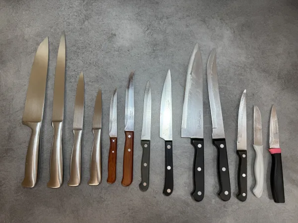
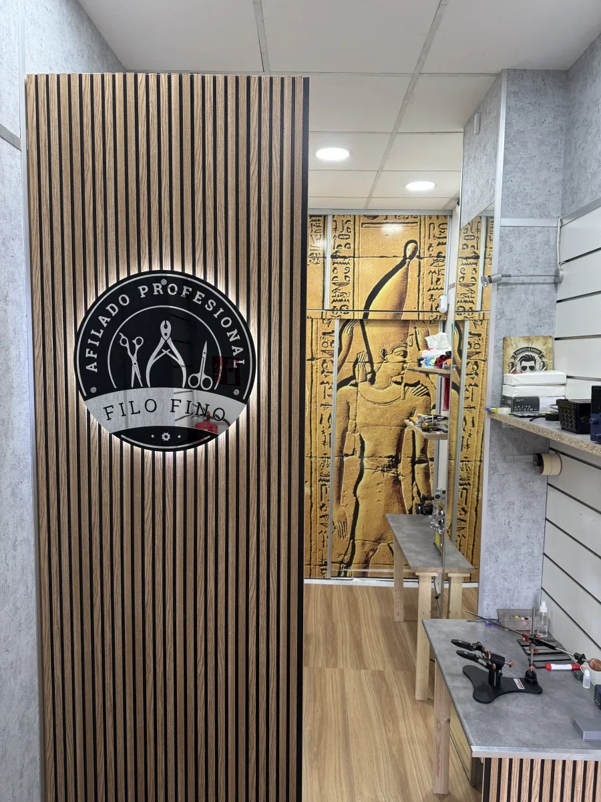

Taller de afilado profesional · Valencia
El filo que tu
herramienta necesita.
Cuchillos, peluquería y manicura.
Un trabajo pensado para cada herramienta.

Taller preciso
Elige tu herramienta.


Del taller
El trabajo, de cerca.
Imágenes del archivo de Filo Fino. Toca una foto para ver el detalle.
Recuperar el corte
Detalle de un cuchillo trabajado en Filo Fino.
Comprobar el resultado
Fotograma de una prueba de corte del archivo del taller.
Cuidar la precisión
Detalle de trabajo en una herramienta de manicura.

Filo Fino · ValenciaTu taller en Valencia
Una herramienta se entiende antes de afilarla.
El desgaste, el uso y el estado del filo importan. Revisamos tu herramienta para saber si necesita afilado, ajuste o restauración.
- Atención directa en el taller
- Revisión antes del trabajo
- Comprobación del resultado
Cómo trabajamos
Cuatro pasos. Una herramienta revisada.
Trae tu herramienta o consúltanos antes de venir.
Hablemos de tu herramienta
¿No corta como antes?
Cuéntanos qué herramienta tienes y qué le ocurre. También puedes preguntar por el coste antes de venir.
Consultar por WhatsApp (abre WhatsApp)O llama al +34 614 00 50 53El mensaje se abre como borrador. Tú decides cuándo enviarlo.